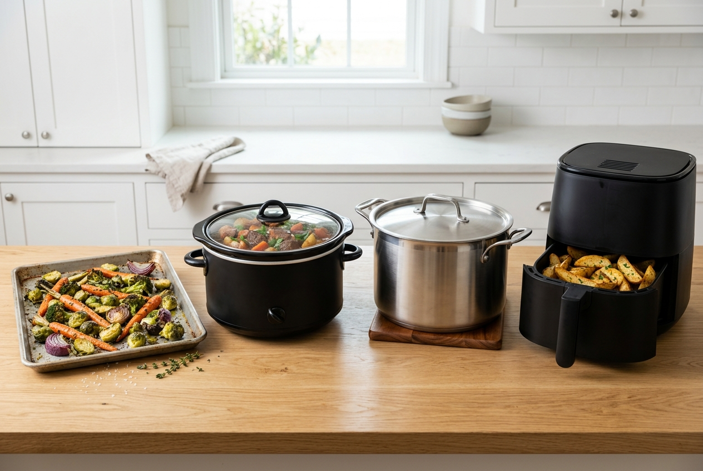
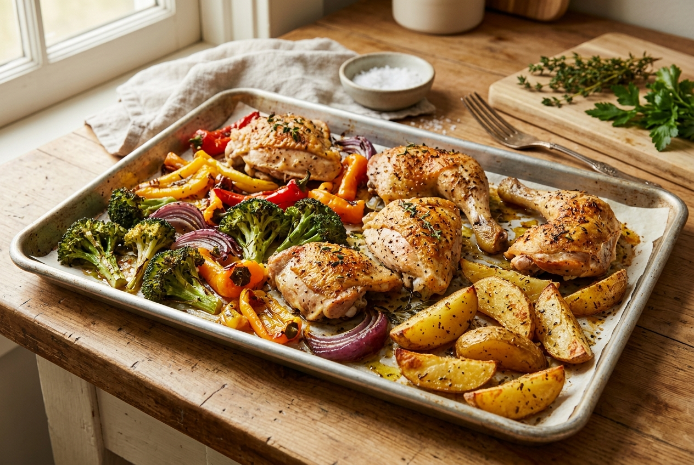
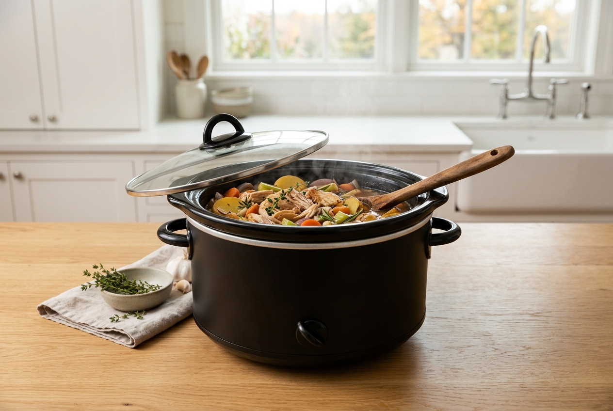
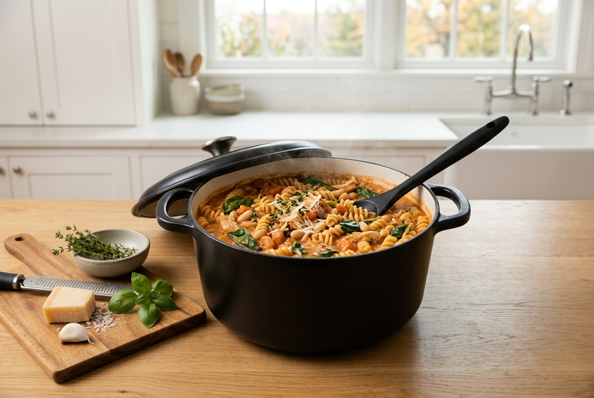
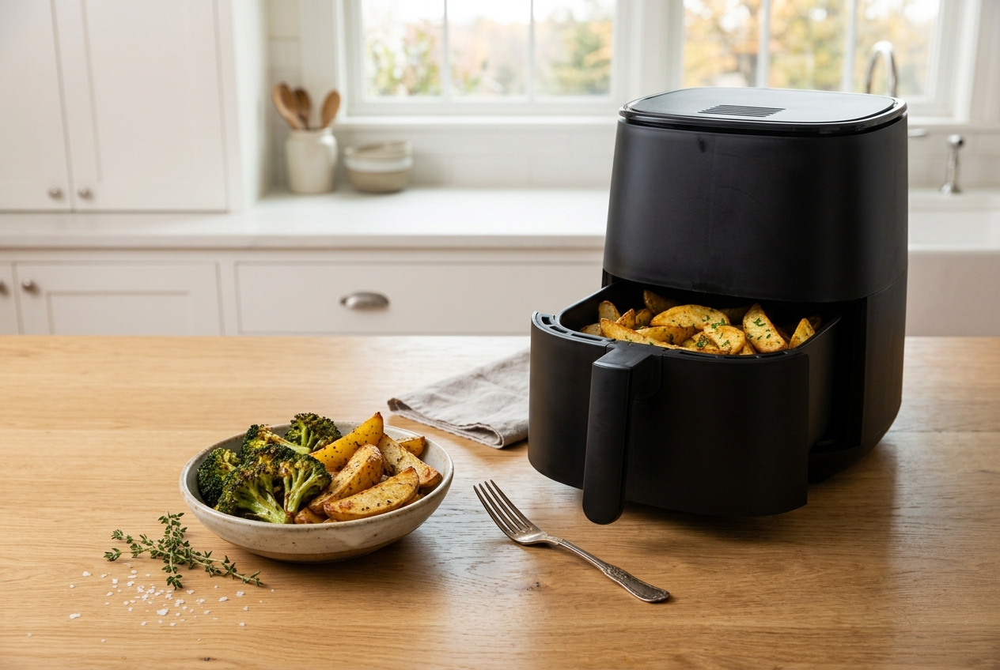

Sheet Pan vs Slow Cooker vs One Pot vs Air Fryer: Which Dinner Method Wins Your Weeknight?
Four methods enter. One dinner leaves. Imagine a tiny tournament bracket for your Tuesday night: one method has the oven doing the heavy lifting, one starts working before you get home, one keeps the dishes in a single pot, and one specializes in getting crisp food to the table fast. Which deserves the weeknight crown?
The answer depends less on which appliance is “best” and more on what you need tonight: hands-off time, a quick finish, fewer dishes, or a dinner that can stretch across a family budget. This guide compares sheet pan, slow cooker, one pot, and air fryer dinners using the same scorecard—so you can choose a method without buying four new gadgets.

The scorecard: how we judged them
These are practical ranges, not promises. Actual timing and effort depend on the recipe, portion size, ingredient temperature, your equipment, and how much chopping you do. Appliance sizes and models vary, too. “Active time” means the minutes you are actually prepping, stirring, or checking food—not the entire time dinner takes to cook.
| Method | Typical total window | Hands-on effort | Cleanup | Best at |
|---|---|---|---|---|
| Sheet pan | About 25–50 min | Low to moderate | Low: pan plus prep tools | Roasted vegetables, chicken, sausage, and mix-and-match dinners |
| Slow cooker | About 4–8+ hours on many recipes | Low once loaded | Low to moderate: crock and prep tools | Soups, stews, shredded meat, beans, and dinner ready after a long day |
| One pot | About 20–45 min | Moderate: some stirring/checking | Very low: often one main vessel | Pasta, rice dishes, soups, skillet meals, and saucy dinners |
| Air fryer | About 10–30 min per batch | Low to moderate | Low to moderate: basket/tray and prep tools | Crispy vegetables, potatoes, small proteins, and quick portions |
Ranges are broad planning estimates, not tested head-to-head results. Follow the recipe and your appliance’s instructions, and check food for doneness rather than relying on time alone.
1. Sheet pan: the group-project hero
Sheet pan dinners are the dependable teammate who quietly gets the whole project done. Chop a few ingredients, spread them across a rimmed pan, season, and let the oven roast while you do something else nearby. With a thoughtful recipe, protein and vegetables can share the same pan and finish around the same time.
Where it wins
- Low supervision: After prep, most of the cooking happens without constant stirring.
- Good texture: Open space around ingredients helps them roast rather than steam, especially when the pan is not crowded.
- Flexible portions: It is easy to scale up for a family or make separate sections for different preferences.
- Easy cleanup: One pan can mean fewer pots. Parchment may help with cleanup when appropriate for the recipe and oven temperature; use it according to its package directions.
Where it loses points
Oven preheating and chopping add time up front. Crowding the pan can reduce browning, and delicate vegetables may finish before thick pieces of protein. If you need dinner in ten minutes, this is probably not your champion.

Try it on: a night when you can spare a little prep time but want to avoid babysitting the stove. Start with our easy sheet pan dinners, or browse cheap family dinners by cost per serving for budget-friendly combinations.
2. Slow cooker: the day-shift sous-chef
The slow cooker wins by moving the work earlier. Add ingredients, set the appliance according to the recipe and manufacturer’s instructions, then let the meal cook over a longer window. It is especially handy when the hours before dinner are packed and you would rather not start from zero at 5:30 p.m.
Where it wins
- Hands-off cooking: Many recipes need only a short prep session, then occasional or no further attention until the planned finish.
- Comfort-food territory: Soups, stews, chili, shredded chicken, and braised-style dishes are natural fits.
- Batch cooking: Larger recipes can provide leftovers for lunch or another dinner, depending on your household.
- Schedule relief: It can make a busy evening feel easier because the cooking started hours earlier.
Where it loses points
It is not instant. You have to plan ahead, and some recipes benefit from browning ingredients separately or adding quick-cooking vegetables later. It also will not give every food the browned, crisp finish you get from roasting or air frying. The insert can be bulky to wash and store.

Try it on: days when you can prep in the morning or earlier in the day. See slow cooker dinners for busy families and freezer meals for busy weeknights for planning inspiration. For safe handling and storage, consult the USDA’s slow cookers and food safety guidance.
3. One pot: the carpool of ingredients
One-pot dinners get the whole crew to the finish line together. Pasta, rice, broth, vegetables, beans, and seasonings cook in one main vessel, letting flavors mingle while saving you from a sink full of cookware. It is a strong choice when you want a proper cooked meal but do not want to manage several burners and separate pans.
Where it wins
- Cleanup champion: One pot or deep skillet is the headline benefit; fewer pans usually mean less washing.
- Flavorful results: Pasta or grains can absorb seasoned liquid as they cook, creating a cohesive meal.
- Budget flexibility: Rice, pasta, beans, frozen vegetables, and small amounts of protein can stretch a meal.
- Easy serving: Many dishes go straight from the pot to bowls.
Where it loses points
You may need to stir, check liquid levels, or add ingredients in stages. Timing matters: pasta can go from firm to soft, and rice may need a little adjustment based on the pot and stove. “One pot” also does not mean zero prep dishes—knives, cutting boards, and measuring tools still count.

Try it on: nights when you can stay in the kitchen for a bit but want to keep the cleanup simple. Pair this method with our 5-ingredient dinners, budget pantry staples list, or weekly meal plan for busy families.
4. Air fryer: the speedy specialist
The air fryer is the specialist you call when you want crisp edges without heating a full-size oven for a small meal. It can be especially useful for potatoes, vegetables, reheating certain leftovers, and modest portions of chicken or other proteins. For one or two people, a quick batch may be just right.
Where it wins
- Quick turnaround: Many small-batch foods cook in a relatively short window, though preheating and batch size vary.
- Crisp texture: Circulating hot air helps brown exposed surfaces when food is arranged well.
- Smaller portions: You may not need to heat a large oven for a couple of servings.
- Simple routine: Once you learn your appliance, a few familiar foods become easy weeknight defaults.
Where it loses points
Basket capacity is the big catch. If you stack too much food or cook for a crowd, you may need several batches, which can erase the time advantage. Some foods do not suit the basket format, and cleaning the basket or tray is still a chore. Models differ, so use the manual for settings, accessories, and care.

Try it on: nights when you want a quick side or protein and do not need to feed a crowd all at once. If you are comparing appliances, read the specifications for usable capacity and cleaning before buying; no single model is best for every kitchen.
What about cost, energy, and the dishes?
The cheapest method is usually the one that fits the equipment you already own and helps you use the ingredients you have. A slow cooker or air fryer may cost more upfront than a basic sheet pan or pot, but buying a new appliance only makes sense if you will use it regularly. Consider storage space, replacement accessories, and whether the method helps you cook enough for leftovers.
| If your priority is… | Start with… | Why |
|---|---|---|
| Fewest dishes | One pot or sheet pan | One main cooking vessel; prep tools still need washing. |
| Least evening supervision | Slow cooker | Most work happens earlier, over a longer cook window. |
| Fast small portions | Air fryer | Often quick for modest batches; capacity can limit speed. |
| Roasted vegetables and browned edges | Sheet pan | Open space and dry heat encourage roasting. |
| Flexible budget meals | One pot | Staples like rice, pasta, beans, and vegetables work well. |
For any method, keep the menu realistic. A short list of repeatable meals, pantry staples, and one planned leftover night can do more for weeknight stress than owning every appliance. Our 20 lazy dinners sorted by energy level and easy weeknight dinner recipes can help you turn the method into an actual meal.
Pick your method: a tiny weeknight quiz
Answer the question that matters most tonight. No appliance loyalty oath required.
1. Can dinner cook for several hours while you do other things?
Yes → Slow cooker. No → go to question 2.
2. Is your top priority the fewest dishes?
Yes → One pot for saucy meals, or sheet pan for roasted food. No → go to question 3.
3. Are you cooking just a small batch and want crisp edges quickly?
Yes → Air fryer. No → go to question 4.
4. Do you want protein and vegetables to roast together while you handle other things?
Yes → Sheet pan. If you want pasta, rice, or a cozy saucy dinner instead, choose one pot.
Try the two-method rule: You do not have to pick one winner forever. Choose two methods that fit your real schedule—for example, sheet pan on nights you have 40 minutes and a slow cooker on your longest days. Build a small rotation around the tools you already own.
Final boss: which dinner method wins your weeknight?
There is no universal champion. Sheet pans make roasting straightforward, slow cookers reward planning ahead, one-pot meals keep dinner cohesive and cleanup lighter, and air fryers are useful for quick smaller batches. The winner is the method that makes tonight’s dinner feel possible without adding another complicated project.
Pick one method this week and try one new recipe. Save this guide for the next “what are we eating?” moment, then explore our lazy dinners, weeknight recipes, and weekly meal plan.
The 5:47 p.m. Rescue Kit is designed to help you choose a dinner and make the next steps easier. For more budget-friendly meal ideas, check out the What's for Eats product collection.
Affiliate disclosure: This article may contain affiliate links. If you buy through qualifying links, we may earn a commission at no additional cost to you. Product suggestions are general categories—not hands-on product rankings or claims that a particular brand is best. Consider a sturdy sheet pan, parchment paper suitable for your recipe, or slow-cooker liners if they fit your cooking habits; follow each product’s instructions.
Cooking times, capacity, cleanup, and energy use vary by recipe, appliance, household, and local utility rates. Follow the manufacturer’s instructions and use a reliable doneness check for foods that require one.